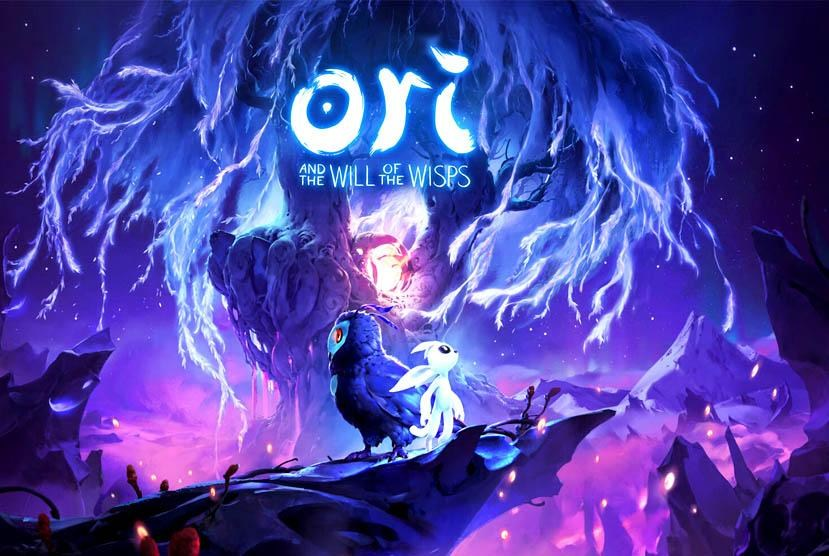

遊戲介紹
3. Ori and the Will of the Wisps (奧理與迷霧森林)

「奧理與迷霧森林」是一款帶有極致優美美術的2D「舊式」動作遊戲，在這類以畫面取勝的動作遊戲中，大多會搭配複雜的天賦、升級配點或各種提供鑽研的系統來消耗玩家時間，不過「奧理與迷霧森林」回歸到最初的遊戲體驗，簡化各種不必要的系統，讓玩家在美麗、各有特色的世界中盡情探險，以主角「奧理」的勇氣引領他來克服難關。
巴哈文章介紹連結：點此前往